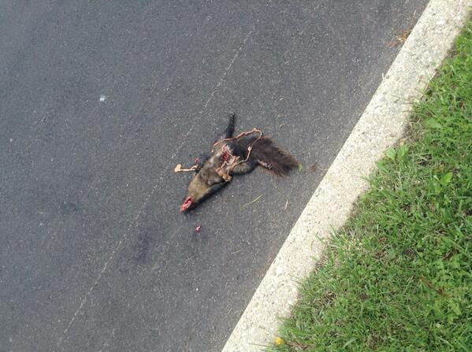

Death is everywhere. If you don't know someone who's died, you will. Yourself.Everything affects how we think about death and dying. We're going to end the course at the individual level.
The Animate Level
Classifying "Free Associations". Asked people:
What comes to mind when you think of death? When you think of dying?
Thinking of Death:
symbols - conventional symbols (funeral, angels), unconventional symbols (meant something to the individual and may not know the backstory - "casseroles", "grizzly bear")
Thinking of Dying:
pain/suffering
medical - a lot of people don't die in hospitals, in the modern developed world, a lot of people do.
The Animate Level: Two "pre-psychological" questions
1) What is Life?
Two Classic Perspectives (Aristotle):
Life functional theories Life is defined in terms of a process. Not a substance or a physical object, but in a process.
Menu of kinds of approaches people have taken to define life. Centering around the theme of what the organism does. If it's capable of doing that, then perhaps it's alive.
Function
Problem
nutrition/reproduction - if it can take in nutrition, reproduce, it's alive.
This can't apply to all species. Silk moths - a lot of adult silk moths do not have functioning mouth parts. Some have all the nutrients they ever need before they pupate. They can no longer take nutrition.Worker bees do not have reproductive capacities.
sensation/reponsiveness - can they respond to stimuli somehow?
Works for a lot of animals, but what about someone in a deep coma? Brain death. Are they by-definition dead? Goes harder when going from animals to plants. Plants don't respond the same way. Ethalene stress response - a plant's way of say "AH!"We encounter a bunch of exceptions where this definition doesn't work.
self-propelled motion
Less clear for plants. They don't move.
thought
How do you know? Plants can't hold the pen to fill out the questionnaire.
Vitalist theoriesFocus on some critical ingredient. Life is present if a certain substance, entity, or force is present.
Menu of kinds of approaches people have taken to define life. Centering around the theme of what the organism does. If it's capable of doing that, then perhaps it's alive.
Substance
Problem
scientific (DNA, RNA)
An organism can be dead and still have RNA or DNA. There was life, but not at this point in time.
metaphysical - faith: presence of a soul or spirit (when the person dies, it departs)
How can you measure that? McDougall tried to measure it [21 Grams film]. Put dying dude on scale, when they die, see if the scale got lighter. Ectoplasm is what the spirit is made of, but it should have some mass to it.
We are going to define it as: LIFE = evidence of metabolism (in biological, metabolic terms)
2) What is Death?
Answer
Problem
absence of life?
Rocks: were rocks ever alive? They were never alive, but they're not dead. Need distinction between dead and non-living.
cessation of life?
Cardiac arrest. Ressuscitation. Mostly dead is not the same thing as dead dead.
Thus, DEATH = irreversible, permanent cessation of life (This is the biological definition.) At the sub-organismic level (tissues, organs), they're viable for a lot longer (up to 72 hours). It suggest that from a biological standpoint, death and dying is a proess. It happens at higher levels, and then lower levels, and lower levels.
General Principles
This is from your average human being that's been around tens of thousands of years with the sensory equipment they've had available and not from a high-tech perspective, but a human, eye-balling perspective.
Life feeds off life - (without the assistance of technology) They see life as a closed system. For something to live, something else has to die or give up itself. I need to eat so I either need to take plant material or kill an animal. Parasite - I'm going to keep myself alive by sucking life out of you. A vampire is a mythological representation of the undead (metabolically challenged). Blood sacrifice - need to kill something for the god to take nourishment.Interdependency between life and death.
Death presupposes life (death depends on life) - temporal sequence. If something was dead, by definition, it was once alive. Life has to cease for something to be dead. Dead squirrel. We can watch its process. Eventually there's not gonna be much there. At some point, it's going to lose its squirrel-ness. It ceases to be a dead squirrel and it becomes non-living matter perceptually. Possible that we are inhaling dead squirrel molecules. But that's not how we experience it. Squirrel fragment over here, Rat turd coming our way. Those things are only threatning when we identify it, only when we can see the dead squirrel molecule. Psychologically, we don't feel threatened. It loses its identifiability as a squirrel.
Death presupposes identifiability (death depends on it being identifiable) - In order for something to die, it has to have form and be recognizable. The moment it dies, it can no longer metabolically maintain that form. That form begins to break down. We're no longer dealing with it as a dead-something, it is a non-living matter. If you don't know it's someone's cremated remains, you'll just think it's ash. How it's identified affects how we react to something.Not enough that they're physically dead, I have to wipe out any reminder of them. They must not be identifiable.
Squirrel. Squirrels feed off of other life to survive. They die. They were once alive. They were once identifiable. You can see that it is dead because it is no longer living. You can see that it is dead because you know it was a once-alive squirrel. When it becomes a stain in the road, barely recognizable, someone who never knew it was a squirrel, will not think it is something that is dead. It's just a dark spot in the road. Who knows what it is.
Reversibility (CPR). It's mostly dead, not dead dead.
brain death
Cortical (outer covering of brain - personality, memories) or sub-cortical (brain stem, primitive functions - respiration, heart beat)? What if an individual has experienced a significant enough impact that the person you knew is never going to come back? What if the brain stem is still in tact? Depending on how poeple define what human life/death is, it has an impact on the ethics on whether this individual should be kept alive. Euthanasia. Differences of opinion here.
putrefaction (decomposition) - stink
If you wait till putrefaction, organ harvesting is impractical.
Why should we care?
Deadness has wide-ranging implications:
Social implicationsComa Patient: We talk to them for various reasons.When somebody dies, we don't talk to them the same way. That relationship has been forever altered. Sometimes resources are withdrawn. The dead are withdrawn from society. Unless you really make a big splash, 3 generations tops, most people have forgotten you. We have impact on our social surrounds when we are alive. When we die, there is a loss of self form.
Legal - taxes, assets (possessions, organs), rights (Priority of rights given to the living.). Cultural variations. People do different things with the bodies of the living and the bodies of the dead.
PsychologicalYou find out that someone's been reported missing. Update: Missing and presumed dead. Update: You know that they are dead. Different psychological process for each stages.14th anniversary of 911. 1000/5000 people evaporated. Those people can be identified - psychologically huge.
How do we die?
Types of Death (medicolegal classifications)
natural(natural)
accident(unnatural)
violence(unnatural)
suicide(unnatural)
Unnatural - more likely to have a human element. They seem to capture our attention more. That ain't right.
Ambiguities and limitations: willful "unnatural" behaviours, different reactions to same "cause"
Lung cancer due to smoking (or eating too much pie). It's a disease, but resarch is pretty clear that the condition can be worsened by willfully engaging in a longterm pattern of behaviour. There's a significant human element involved in the percipitation of that disease. Is that natural or unnatural? What if they were fully aware of the risk? To what degree is that suicidal behaviour?Same cause of death and the different reactions from different individuals. Both died of heart failure. Person 1 - done whatever they could in this long process, but still died. Person 2 - One sunny afternoon, heart failure. We need to add a second dimension.
Add the Expected/Unexpected Dimension
Keep in mind:
It's NOT identical to prolonged/sudden Child with cancer - tragectory may be prolonged. Some parents don't want to think about their kid dying of cancer. Still going to be an unexpected event. So they may ignore the fact that the child has cancer until the child's day comes.Police-action shooting. Very sudden event, but at some level, it can be part of the job. That's kind of expected. Occupationally, it's a sudden event. Psychologically, expected. A lot of the times, expected/unexpected will map to prolonged/sudden but not always
It depends on knowledge/experience - What is expected to you may be different to someone else because of different backgrounds. Expected is an interpretation. Hospice workers have to live with the realization that the people they're caring for are going to die. They have a different knowledge base because they work with the dying.Young woman committed suicide. Overheard that some girl said "I don't see how she could have done that, she was so pretty." Wow, wow, wow... Her experience base is so different from many other people. What stood out to her was that it was really unexpected.Can affect how one grieves.
Positive
Negative
Expected
preparation (best case scenario) - if you can see this death coming, you can start to prepare the story. You can start the grieving process early. It won't hit you as hard once the event actually occurs.
fatigue (worst-case scenario) - caregivers for the dying. Chronic substance abuser, abusing alcohol for 40 years and having complications, depressed, in and out of hospital. The survivors, family members, don't know what to do. Okay, they're alive another day. Tiring process. May silently wish for the person to die.
Unexpected
ignorance - We spent today like everyday just doing what we're doing. It was agonizing. Things were as normal as possible as long as possible. We were happy. At least up to that moment, we were okay.
unfinished business - Didn't get a chance to say goodbye. Maybe some dumbass fight. Game over. Have to make amends without the person physically present. Not going to be the same as dealing with them alive.
Real benefits of whether a death is expected or unexpected:
Expected-natural older - often.
prolonged - chronic illness, progressive deterioration.
nagging - maybe they're not taking care of themselves. Give 'em some shit if they can somehow prolong their life.
anger - we saw this coming, you could have done more. Dumbass.
Natural-unexpected younger - child with cancer. no make a wish foundation for adults.
sudden - what it feels like
denial - don't wanna go to the doctor because I don't wanna know that something's wrong with me
Unnatural-unexpected newsworthy - people are attracted to this kind of stuff
support groups - need help to get over it
PTSD conspiracy theories - one of the psychologial functions to make the unexpected more controllable. ah, i see, i know why this happened. → unexpected-unnatural.
expected-unnatural high risk- stunt pilots, racecar drivers, firefighters. legal or illegal (drugs, gang).
Lecture 2: September 23, 2015
The Species Level
How similar do you think humans and non-human species are?
1) How can we know about death-related experiences in other species?
Two different approaches:
toolsobservation (learn their language) - have to learn those species' language. We know that they communicate with one other. They can try to communicate with us as well. Learning their language depends on the species. It's possible. We're left with anecdotes/stories. Dead great uncle. Dog clearly attached to the him. Not going to say the dog was crying, but it was definitely doing something. Anecdotal pet story. Alex the Parrot, Koko the gorilla. communication (teach them our language) - Instead of learning their language, teach them our language. Is it that different from one human trying to communicate with another human with a different background/culture/language? No. Communication is always some combination of observation of behaviour.
risksStarting point assumptions that we have can take us into different directions. 2 extreme positions:
the convenience of objectification - strip human qualities from animals.
"bloody Darwinism" (ideological position - masses of protoplasm, whoever eats the most wins, we happen to be smarter, instincts, lower view of humans, nothing special or personal about animals) or
"elite Creationism" (humans are endowed by divinity with special rights and capabilities that put them aheasd of all non-human species, humans have souls, animals don't have souls).
In either case, animals are several steps removed from humans. We assume that their abilities are a lot more limited and less sophisticated than humans.
the convenience of objectification - the naïvete of idealization. Animals are awesome, more awesome than humans. (Dogs never lie about love.) Animals would make better humans than most humans would. We're the ones that should be in zoos. If you allow the animals for good behaviours, you have to allow them the bad ones too.
2) What do we know about death-related experience in other species?
Prerequisites for death to psychologically register in an animal:
RecognitionDeath represents a change (living → dying). Recognition that something has changed. You have to be able to mentally imagine how something could be or remember how it was other than it is now. It has to be able to make a comparison between what is now vs. some other possible state. My litter mate is not moving, I can only remember when we frolicked yesterday.
Need for a fullblown death-related experience:
past-based (remember what they were then): it registers that their state has changed because I can remember when they were not unresponsive like they are now. Applicable when death of other: grief. If a species has the cognitive capability to recognize a change of status, that death can register. The emotional state associated with that is likely going to be grief. Grief is about past.
future-based (imagine what could be): what is now and what could be, or what definitely will be. Compare the now with what might be or definitely will be. Death to self: anxiety. Others may die, and I may also die. Anxiety is about the future. Terror Management - we've got enough capacity that we can reflect on the future. Not only that others will die, but we will die too. It makes our tummies hurt. Difference between living now and dead at some point in the future.
EmotionCapacity to experience emotion. Linked to goals. Death is the ultimate goal-blocker: love → grief. Love is motivational. Love is the need to promote the well-being of another. When that person dies, your capacity to do that is hampered. Death blocks that goal permanently. Our goals are interdependent with each other. "We were planning our future together." Grief could be an emotional response to the goal-blocker that the dead other creates.
Koko and Michael - Michael was the other gorilla. BFFs for 20-something years. They painted. Asked to paint love. Michael died very suddenly.
Possible indicators of Koko's grief:
"crying" - try to map sounds to things. When does she make these sounds?
increased need for affiliation - stuck to trainers
night light - Koko asked for one. A shift. Feeling unsafe. A part of your world is missing.
"Sorry" "cry" signs.
Michael's room and blankets - They had separate rooms that were connected by some hallway. After Michael died, Koko took her blankets to his room and made a big nest for a while. Then she took all the blankets into her room. Identity markers. Objects of the diseased. Occupy his space, put her objects with his, reincorporates objects back into her own space. We see Koko using Michael's objects in a symbolic way.
3) What (if anything) makes humans unique?
ability to create and use symbols: identity markers. A symbol is using something to stand for something else. (words, play objects - cookie in a gun shape.) A substitution. Identity markers can be possessions, places, people. Something we have invested part of ourselves in. Repository of memories. Sentimental stuff, stuff that has the most memories, emotions attached to it. We hold onto them, we psychologically poop them out (break up - returning/burning ex's stuff). Some are ceremonial (breakage, burnage). Show that it's not part of our identity anymore. It's how pervasive this stuff is.
awareness of the "human condition": limitations. We have a greater awareness of the human condition. There are distinct limitations with being a conscious being in a body. We know we are trapped in time - we had a beginning and have an end. We have bookends of our physical existence. We experience time as a linear phenomenon. This sentence that I'm saying right now, it's gone. So is that one. That one. Make it stop! Then you'll be dead. And that bad joke is too. There is a now and then it's gone. Future becomes present becomes past. Trapped in space - we're stuck here for the duration of our physical existence. my consciousness is on top of that piano, CAUSE IM A SHOWTUNER!!! (psychotic, experiencing consciousness outside of the body)We experience the world inside a body. Our sense organs are like existential peepholes. We have a localized experience. We can't be every place at once.
experience of self as a conscious being: "Pure I". We can experience outselves as conscious entities. Not just aware, we are aware that we are aware. Think about it would be like of having never existed. You're the writer, producer, director. There you are as the silent observer. You cannot turn off self awareness, consciousness. What if we can turn down the volume of stuff in the outside world? Float tank - scary hotubs with a lid. You float. It matches your body temperature. Eliminate reminders that you have skin, grave, sound is muffled by white noise, it's dark. "Is it like being in the womb?" "I don't recall. Rumor has it that I was one of the pod people so I wouldn't know."Completely lost track of time. Trippy. You can maintain alertness. All the outside stuff isn't there anymore. Minimize it as much as possible.What happens to consciousness? Conscioussness doesn't change. Only turning down volume of everything else. We don't go in an altered space. "Naively eternal". Time and space = external reality. Take away outside markers, consciousness starts to feel like I is what I is. In a body, but not a body. You start to feel disembodied. Limits of the body start to feel irrelevant.
4) "Human Condition" versus "Pure I" => Existential Dissonance (ExD)
Limitations are indisputable, but when we turn down the volume on that, and we experience consciousness as consciousness so it feels like Pure I. It's about how it feels, not what people believe. Have you ever felt like you've always existed? Which one's true? Both? Either? Beither? You're either eternal or limited, right? We may have experienced one or the other at different times in our life. [Cognitive Dissonance]. Is this complete madness?
Mirror → increased desire for "Pure I" experience (Burris & Lai). Turn up the heat to lessen the dissonance - put poeple in front of the mirror. They become more self-conscious, more reflective. They become more aware of the fact that they're in the body. It reminds them of their human condition. Fill out questionnaire with mirror turned around or facing them. Present people with a list of experiences. How much would you be motivated to have the experience like that? People with the mirror condition want the Pure I experience, that I'm temporarily escaping the human condition."Pure I" experience → "Crash" back into body → increased motivation to escape body through "us". Try to induce the Pure I experience. Some people talked about floating and stuff, from brain stimulation. People started feeling more timeless. Measured how people feel trapped. "Pure I" felt more trapped into their body after. Religious mystics - spiritual transcendence, it goes away, they crash. Being back in a body doesn't just suck, it really sucks. People who crashed back into body, showed more motivation to scape body through us. Escaping body through relationships.
[ME] [Us[Me]]
I am me. If you find a special friend. Me can be embedded into Us - Me becomes less of a focused attention, less likely to define the limits of the self in the limits of the skin. Especially motivated to keep relationship because I don't want to be existentially smothered. I will smother you so I will not smother myself.
"Pure I" history + mirror → less condemnation of possible suicide. Put in front of mirror, read a story about a guy experiencing problems in his life. He took too much meds, wasn't suicidal. He didn't care, could have cared. Pure I History + Mirror → less condemning and more sympathetic of this guy. Why? Because he got out. He got out of the body.
5) Death, "Terror," & Existential Dissonance
Terror Management - We're humans with capacity of abstract thought. We can see that we will die. That freaks us out. We try to manage that terror. Culture says if you do stuff so you can cheat death.
Some think it's all about death. 6 degrees to the Grimm Reaper (Kevin Bacon).
Terror Management Theory (TMT) - reduce terror by "escaping" death"
Existential Dissonance (ExD) - reduce dissonance by "escaping" the body
But... Conception and Death can produce similar effects. Reflect on death vs. reflect on conception. Death and afterlife, birth and prelife.
TMT: conception → body → death → terror?
Burris and Sani - Write about what you think about these things. Sea monkeys - death-life state. Think about life or death, but not about themselves. There is a multiple process going on.
Death
Conception
Sea Monkeys (neutral - are they dead? alive? neither? both?)
symbolic imortality
5.36 =
5.51 =
5.40
literal immortality - I had a near death experience without being dead. I know that death is not the end. That I will live on. How much would you like to have an experience like this?
4.33 > I'm more interested in having this condition
3.78 = Didn't have that affect.
3.64
"Pure I" - I had this experience. I went out of my body, it became irrelevant. I had no idea of whether I would survive death. All I know is that I'm in a body, but I'm not a body. No implication of an afterlife. No immortality guarantee.
4.13 = Increases people's desire to have a Pure I experience.
4.00 >
3.38
"angst" - They want assureance that thye will continue on in some way.
2.89 >
2.39 =
2.03
Death → escape "terror"? Yes
Death OR Concepton → escape body? YES.
ExD and "Little Deaths"
TM focuses on big deaths - as the end of existence. Little deaths - any kinds of losses. Loss of identity markers.
history of Pure I experiences → ExD
ExD → motivation to "escape the body" → external "identity markers" = possessions, relationships, group memberships
They tend to be very invested in identity markers. More interested in going on vision quests and telling stories about their treasured possessions, focussing on their group memberships, geneologies. Because those are identity markers that also help you get out of the body. If I invest myself in a treasured possession, thats a part outside of my body. Geneology can help me transcend my individuality. Escape individuality, escape body. Objects allows them to transcend these limits.
Why do people fight over identity markers? Identity markers are ways that we can escape our physicality anad associated limitations. HORCRUXES
Lecture 3: September 30, 2015
Historical/Cultural Level
Cultural death experiences: Recurring components.
Identity Markersname, posessions, images, body itself.
Extensions of the self - places, posessions, relationships, ... The deed person's name, images of the diseased person, dead person's posessions, the body itself. All things that are linked to the identity of the person.
SpaceThe broader physical environment. Movement & "sacred space" (setting apart, dealing with this differently).
Elementsearth, water, fire, air. Many rituals are using a pre-scientific understanding of the world around us.
StorytellingA certian narrative with the event of the death of someone. Eulogy, myth (origin of who we are, what are destination is), instruction (what can we learn).
Function (A grand function of every one of these components): Differentiation of dead from living. Separating out the dead. Acknowledging waht is a biological/spiritual/metaphysical event. Certify the fact that there's been a change to this person's status.
Identity Markersnot invoke prescence. Name: not speak their name, if you speak ther name, you invoke their prescence. By not speaking their name, you ensure that there's a cosmic restraining order between you and the diseased. Posessions: important to bury individual's posessions so that they have everything they need. Don't want them to feel like they forgot something and come back and haunt you. Memorials. Trophy (serial killers - keep an ear). Sometimes completely eliminate the body because you want their identity to disappear (hatred - bonus round differentiation).
SpaceRelocation, portals, protection. Being dead involves moving. Relocation: they go some other place that's away from us. Portals: barriers or passage ways in between these worlds/dimensions. Need to protect ourselves if their are doors.
ElementsSeparation, dissipation. Buried under soil or buried in the sea. Creating a barrier between them and the living. Symbolic barrier. Body burned, ashes spread (using fire to make the body lose its form, air to spread it). Separation between the in tact living and the dissapating floating dead.
Soundsendoff, covering tracks, scaring "stowaways". Using noise as a smokescreen so you can leave them there and they can't follow you back. If portals, try to send the dead there, use noise to scare cosmic goons from crossing over. Used in a magical way to ensure there's a separation between the living and the dead.
"Not Dead" Activitiesdefying death. Flipping off death. We're eating, drinking, having fun, we can even kill stuff. If we were dead, we couldn't do this, but we can, so we're not dead. Life goes on.
Storytellingmemories, consensus, meaning, prescription. Solidify our memories of the diseased. The person in the dead body is a passed episode. Have to be talked in past-tense. Filling in memory gaps, collective acknowledgement of yeah, this person is really dead. They try to make sense out of it. Prescription in the sense of what can we learn from this, what do we do with this? Try to tell stories to shape public opinions.
Two story motifs
1) The Comfort Motif
There is something separates the living and the dead. Whatever this boundary is, if it's dimensional or the fact that death is the end, the dead are no longer accessible by the living. The dead are inaccessible. In a different place or they've ceased to exist. Both religious and non-religious version of the motif. Timmy's in heaven now. I'm not going to see Timmy until I die and go there.We access the dead indirectly via identity markers. Using identity markers in a way to bring comfort to ourselves. Family has lost their youngest son. May keep their sons room exactly the same way. Using son's posessions as furniture as a way of trying to keep the son's memory alive in them. They can't access their son directly. Even if they believe in heaven, they cannot have direct contact with their son agian. They may believe that they could be reunited when they die. They use identity markers to remind them of the joyful reunion that will come.All we can do is draw comfort and hope from their identity markers.
2) The Threat Motif
Not only are the dead accessible, but so are the cosmic goons. There is an unseen world that exists close to or among us. If they make their way past the boundaries. Have to be careful with their identity markers. Don't want to invoke their prescence. Don't speak their name. The threat: the dead continue so you have to be careful. Boundary is like a portal. Don't want to open that portal without the proper safeguards in place. It becomes a magical way of dealing with identity markers. Particular rituals/days of the year that can open up the portal. Celtic: Halloween - on a particular night on a year, that's when the portal opens up. Costumes blend in with the cosmic goons so they won't hassle you. Trying to look as badass as any other cosmic goon. This happens one day a year, you need to prepare yourself. This is a real and present threat.
Oxen had to fall in the right direction. Singing, making noise, laughing, playing games, killing animals, gathering, dancing, sendoff, the body, gifts. Making sure they burty the body right. Position of the body. Clothing of body. Nature atop the burial (shitload of trees).
Watching film of deceased - enjoy the person again. Hear them again.
Flower on coffin. Singing.
Casketts. Protecting remains. Comfortable coffin.
Cleaning of the body, disinfecting. Grooming.
Feel, touch, kiss remains. Eulogy. Religious sendoffs. Use things to keep the shape of the body.
Car formations when transporting the body.
Celebration.
SAd that he missed his mother's funeral.
Singing to death.
Cutting the body open and sewing them back up.
Freezing heads. Cryogenics. All we can guarantee is that if you're not frozen, you don't have a chance.
Muscular distrophy - they don't want to die. They still have their minds even if they don't have their bodies. Death is going to happen anyway. when the time comes, decisions may change. Slowly dying - get used to it.
If you eat a can of beans, you throw the can away. Why are you trying to save the body?
Cleansing the self. Putting the body in water. Cremating. Extra care of the body and the clothing.
Teaching the young.
Wrapping them up.
Lecture 4: October 7, 2015
The Medical Level
80% of people will die in a medical setting. Medical system has replaced the role religious systems have in terms of prominence and impact. Treatments are incompetent, not available for everyone. Physicians were asked if they would accept long-term treatments for treatment and they say "hell no."
Key Background Factors - these are the things that affect when or whether somebody has contact with the medical system. Not all directly relevant to death.
Community Health Initiatives Trying to educate the public about health and disease. Providing public services that can prevent health and disease. Relatively minor ecoli outbreak at a food processing company: that's a scandal. An accepted safety standard was made and followed. Ecoli outbreak in water. Huge scandal because you assume the water is going to be safe and clean.Something only becomes perceived as a scandal because USUALLY the system works well. We know to wash our hands. If you just had a big poo poo and you're about to make my sub, please wash your hands. For symbolic reasons at the least.Sesame Street Initiative (Obesity outbreak). Cookie monster being educated about fruits. He's not avocado monster. Trying to make distinction between anytime food and sometime food. Muppet - Kami. HIV/AIDS. [Video]. Educating children.
Health care accessibilityLiteral availability of healthcare affects its psychological availability. American healthcare basically means walk it off. A lot of people will just walk it off because healthcare is limited. "I can't afford this." That may delay care and complicate the condition.
The four types of death (natural/unnatural/expected/unnexpected) - they can all end up in the medical system. What if it's an unexpected death? Organ donation, do not ressuscitate order, etc. The type of death will drive the kind of contact you have with the medical system both during rehabilitation or death (what happenss afterwards)
Key Players. The decision makers that have an impact on the quality of death.
physician/medical staff Psychological issue centers on the medical mindset of the medical staff. Real risk to slide into a mindset that's a technician - that you're treating symptoms and body parts and not people, not focused on emotional support - only relaying information. Patients are people.
HOUSE. The main character House is an extreme stereotype of that. He was just solving the puzzle. He wanted to figure out the puzzle.
There used to be no death education program for medical personnel (not just how to deal with patients, but to deal with themselves). Research - people who decide to be physicians have issues (many but not all). Compared to general population, physicians score higher on fear of death measures. Physicians have 3x the suicide rate (higher for women). They experienced an early loss. Higher than average perfectionism. Patients die - I failed, this shouldn't have happened, I don't have any sense of control anymore. A lot self-medicate. Fear of death, increased suicide risk, possible history of early loss, self-medication, workaholic subculture (residencies), sleep-deprived. NOT a good picture. Makes sense why physicians objectify their patients. Being a technician takes the emotion out of things.
familyMorality 101. Trying to balance the needs of others and your own needs. Family members (those who survive the dying person) need to balance their own needs with the needs of the dying person. "You can't die now, we need you here" message - how long the dying person may fight and the amount of suffering they will endure to try and hold on for them. If there are unresolved issues in the family, the death of a family member will bring those to surface. It represents an opportunity for family members to try and resolve those things.
patient They have to deal with the fact that they're the one dying Nobody else in the system is actively dying, the patient is. They're in the bonus round - extra set of issues.
Extra issues:
fearsAfraid of the unknown, going to hell, afraid for their loved ones (will the family fall apart? Maybe they need me, I'm the glue), what's gonna happen to people when I'm not here? Self-focused and other-focused. How do we know? Is anybody talking to the patient.
communication styleHow in touch are they with their feelings? How willing are they to talk about them? If you're in a hell of a pain, are you going to ask for more pain medication.
sense of responsibility to participate in their own healthcare. Lots of family members don't want to decide. Usually dying individual trying to push these responsibilities off. You don't want to deal with it? Did I mention I was dying. How much responsibility is the individual willing to take in their own care?
unfinished business estrangements, grudges, disappointments. The best you can do, if there's time, awareness, there's an opportunity.
Key issues. The factors that directly affect how a death is experienced
quality of life Realistically, what's the possibility of recovery? Terminal - pain management. How long is the dying process? Preservation of personhood. A lot of us are afraid of losing our sense of self more than dying. (relevant to medical readings shivo). Different interpretations of quality of life - living for a few hours vs. not being born at all.
communication Good communication includes talking and listening.
talking AND listening if someone says something a second after you say something, it means they probably weren't listening and were thinking about what they were going to say. Both legally, emotionally, medically when the patient isn't an adult. Child can't legally participate. Can't communicate what they're experiencing. Isn't easy and isn't automatic.
information AND feelings Messages that supercharge the process. Can make things more difficult. If it's prolonged, an individual's feelings may change.
choice
sense of choice What is the dying patient's sense of control. Do they feel like they have a say? Is the patient there, but people are talking about him like he was unconscious?
making of choices For a patient, 3 choices: Yes, No, search for alternatives. Not making a decision amounts to a refusal. It's the idea of something that freaks us out. Maybe when we get alzheimer's, we just mellow out - we don't think this. It's not about the logical facts, it's the idea of it. The movie in our head freaks us out.
"playing God" Family members - no surviving family member wants to do this unless you're a serial killer in waiting. They don't want to make decisions regarding the end of life care. Is this fair for the surviving family members too? It's very family-specific. Without people talking about it, it's not going to work.
(competing) ethical frameworks (Schweder) Everything has to do with a framework, a way of making what people consider morally correct decisions. Different individuals in different parts of the world prioritize things differently. There are different frameworks.
Competing Ethical Frameworks (Schweder). Depending on the framework, decision making is going to be difficult. Everyone can think they are morally correct because they're using different rules. They're prioritizing different things. When we experience conflict in ourselves, we could be considering different frameworks.
Autonomy (harm, rights, justice.) Is harm an issue? Individual rights. Justice.
Community (duty, heirarchy, accountability.) Not just about your rights. You're accountable to other people - family members, tribe, local community, faith, nation. It's not just about you. Focus on shame vs. honour. Feeling like a burden.
Divinity (sacred/natural order) Something that transcends you and me and everybody else. Divine decree, natural law. This is the way it is, the way life/universe works. We didn't make them, but they govern all of us. Religious - God said to respect life - massive impact on the medical decisions that people make (physician-assisted suicide).
"healing" versus cure (hospice) Patients that are no longer looking to be cured. Help them face that death as comfortably as possible. Focus on creating as much comfort and safety as possible. Opportunity of healing of emotions and relationships. Not trying to heal the body anymore. Trying to get as much distraction out of the way so people can come together and make the most of the time that they have together.
Lecture 5: Octber 14, 2015
Death and the Law
Three thought questions
Why do we have laws (in general)?
What laws exist that are (somehow) relevant to death?
How well do laws (2) map onto reasons(1)?
The Functions of Law:
overtprevention of external chaos. Trying to prevent physical harm and social disorder. If you jaywalk, that can endanger yourself or others. Trying to regulate people's behaviour. Community ethic focused on our interdependence/accountability with each other. Duty to not make life too difficult for one another. My right to swing my arm ends at the short of your nose. I can swing my arm, but if it hits you, that's against the law.
When you're alive, you get whatever you want as long as it's legal. When you die, you lose individual rights. The needs of the living outweigh the wishes of the deceased.Disinheritance laws: if this person is a bonefied dependent, you can't cut them out of your will. Once you're dead, you lose the right to be an asshole back to them. Death can change your status.
covertprevention of internal chaos. Preserving a symbolic order. Protecting symbols. When you're looking at human behaviour and you see somebody doing something that to you doesn't make sense, it's probably symbolic. If a behaviour doens't make sense, it's probably symbolic. You may be looking for external chaos, but it's trying to prevent internal chaos. Don't mess with people's identity markers or you piss 'em off real quickly. People are investing themselves in these things.
Poured 2 bottles of coca cola down the stairs. SYMBOLS, MAN! You work with what you got. Deregation of this western symbol.Death penalty: Yes/no - high supporting rate. Giving alternatives - lower supporting rate. Why are people acting violently when people are against the death penality? It might make sense if these people are close to a victim. But if not, it's more symbolic. Someone on deathrow gets put on suicide watch. You don't get to decide when you die, we do.
Before
Before death when death is way off. Planning for the future that may seem far, far away.
What are some problems in this stage?
wishes (influenced by) - what about wishes when it comes to that near period? 80% of death occurs in a medical context. What will happen to you if you end up in that medical context? You can make choices now for then. You might not be conscious at that time, so what would you like it to be like? But there are a number of factors that influence our wishes:
ignorance - if you don't know what options exist, you cannot have them in your menu. Burial or cremation? Burial doesn't mean you have to be embalmed. Greenburial - put in ground with a minimum of stuff. Fully biodegradable casquette. Body goes directly in the ground. Not in Aunt Jane's backyard. It's something else on the menu. Maybe it works for you, maybe it doesn't. There are limited options. CSI body. Crash test dummy. If you don't know there are options, you can't make decisions in that direction.
idosyncrasy - individual differences. Quirky things. "When you die, I'm gonna dance on your grave." So his last wish was to get buried at sea.Navohi - put body in balloon and ignite body and shoot you up like a rocket.If it's not illegal, it's doable.
family systems
denial and threat - The body is a massive identity marker.
Wills - they don't necessarily involve big sums of money. People will usually fight over identity markers. The possessions of the diseased are the most powerful identity markers of the deceased. Trying to preserve the memory. Health care directives/medical proxy - living wills. You specifying in advance what treatments you're willing to accept in the case of your future incompetence. Good chance that we will be incompetent before death.
What movie in the head feels less oogy for you? If you don't want to be hooked up to a machine, you have the right to say you don't want that.
It takes precedence over family and medical recommendations. Legally, it's something to be honoured. It has to be legal. It can get complicated (Schiavo). If you want to have any say at all, that's what advanced care is for. Alternative: appointing medical proxy (massive responsibility). Majority of North Americans do not have a living will. Probably some combination of ignorance and threat and denial.Power of attorney - designating someone to make financial decisions. They better be a trusted other.organ/body donation - big difference between how many of us think it's a good idea and how many would do it.
70% said yes. 17% signed donor card. "Give me dead people's organs. I want to live to 300." Some poeple have changed it to an opt-out policy. You're an organ donor unless you say no. More organ donor rate. People who are highly attached to identity markers in general, didn't sign a card.
Moderately attached → you can have my organs. Not attached - YEAH! TAKE ME NOW. TAKE IT ALL. People are thinking about their body as an identity marker. "You can't have my stuff! That's me!" "Okay, you can have my pancreas, but what about my face? No!"
[PENIS STORY] "DUDE! You got your meat cannon back! Oh, it's not yours." "It's not his, I feel like I'm cheating." "That's why I do this course this way, not to read you penis stories."
During
Referring to acts that involve causing some form of unnatural death. Big theme: people should not make decisions regarding the actual event of death. Be that our own or be that of others.
suicideWe're not supposed to decide when we die. Suicide was not illegal, but for the longest time, assisting it was.
In Britian, suicide was illegal for hundreds of years. What are you gonna do, sentence them to life? It doesn't make sense, it's symbolic. Massively symbolic issue. Why make suicide illegal if the punishment isn't meaningful? By making suicide illegal, that's symbollically saying it's not okay.Ethic of divinity - It's the way things are supposed to be. View suicide as destroying god's creation. Suicide was a bad idea because too many martyrs (too many people were giving up their lives to be on good terms). Punishing suicide by doing nasty things to the body. The corpse was not allowed to leave through the door, but through the window. It's making it freakin' harder! Gotta do different things to the body moving through space. It's meaningful, not logical. Doesn't make sense from a practical standpoint.
homicideWe're not supposed to decide when other people die.You're glad you came to university for that one. What was the actual intent? Grey areas.
euthanasia/physician-assisted suicide[Dr. Donald Low video] Since that video was made, Quebec passed an "end-of-life-care" legislation. It has been decriminalized in Canada. PAIN vs. SUFFERING. A lot of Dr. Low's comments were focused on the psychological elements, not physical. Sense of control, agency, being able to continue to be a social being, a friend, a family member. A progressive loss of those things that he found most problematic. Pain is one issue, suffering is another aspect (personhood).There is a difference between a right to life and the duty to live. If you want to live, you have the right to do that. If you don't want to live, can we really force you to live?
withholding/withdrawing treathmentMalette v. Shulman (1990). Patient from Jehovah's witness tradition. At the time, did not believe that blood transfusions were good. The patient signed something that did not allow them to do blood transfusions. Physician ignored the declaration and administered. Physician convicted for assault and battery.It's okay not to prolong death, but it's not okay to hasten death. Okay to refuse medical treatment. Not okay to hasten death (laws are shifting now). If you're not doing anything to prolong death, it was like it was their time to go. It's okay to not unnaturally prolong someone's death. It's not okay to unnaturally intervene to shorten someone's life.
death penaltya lot of people make the argument that it's a crime deterrent. When someone is about to murder someone, they probably aren't thinking about being incarcerated, much less executed. It's psychologically problematic to think it's a crime deterrent. (It's a long process to kill someone.)
After
So you're dead... now what?
taxes/estates - they get you on the way in, they get you on the way out. You basically have to pay because you die.
funerary constraints
decorations - laws around what you can do with the body. Legal issues intersecting psychological issues. Powerful identity marker stuff. I wanted him in his bedroom or my backyard, but that's illegal.
zoning laws - you have funeral homes in the same areas as strip clubs. Keep them outside of residential areas. Industrial districts. Out of sight, out of mind.
funeral business regulationsYou're dealing with the loss of someone, you're extremely vulnerable to exploits. The salesperson's dream is the grieving survivors. What are you gonna do? Put Uncle Frank in the back of the SUV and drive around and comparison shop? It's a short term decision. You can be sold things you don't need. It just doesn't feel right to look for a bargain. Casquettes are wedding gifts - big idea is that this can be expensive.
autopsy/exhumationWe need to recover the body to do autopsy. Epidimiologist - access of body could track transmission of disease. Maybe ethic of divinity - once body is buried, body must stay buried. Different ethical frameworks when it comes to the body.
necrophiliaNot actually a crime. Necrophilia! puts the rot in erotic!"Violating a corpse is in the criminal code. Doing something unnatural. When you're dead, you lose your ability to choose. Can only rely on the ethic of divinity to be seen as sacred property. So we have to have laws to prevent violation of corpses. If lovely couple. One dies and wants them to do it one more time before I'm buried. Partner honours that. And people are like: Shut up!!
necessity of disposalDo more things with ashes than in-tact bodies. There are artists who do a painting with the deceased person's ashes. Life gems - send ashes, put it in a super condenser, and extract carbon and turn them into a diamond.
Arguments for advance planning
How your body will be disposed, whether or not you make medical donations, etc. All choices that you can participate in that relate to your death.
Different arguments:
self-focusedDon't you wanna respect the movie in your head? If certain things make you uncomfortable, opt-out. If comfortable, opt-in. As long as it's legal, you can do that. Some might be like "I'll be dead, so who cares?"
other-focusedEvery choice that you don't make, somebody else is going to have to. What are you willing to leave undone that your loved ones will have to pick up and deal with? Every decision you make, they don't have to. What can you do now to improve the quality of somebody's life once you're gone?
Lecture 6: October 21, 2015
The Religious Level
Three Questions:
What will happen to you when you die?
Why do you believe that?
Has this changed over time?
Regardless of what you think will happen to you, it is a belief because it is a future event. Have to restrict to answerable questions. Can only look at the human side.
Three Assumed Human Needs
What are humans like? Not a want, but a need. If it isn't there, we suffer physical or psychologically. (Nutrition and hydration)
meaning - We want the world to make sense. We want to know why events happen. Gossiping: Trying to understand what's going on.
Meaning can take a variety of forms from trying to determine if something is threatening to the maning of life. Experiment. Experimenter leaves and someone else comes in. They look similar, but they're not the same. There's an expectation that there's gonna be some consistency.
control - Need for control. When we feel like we have no control with the environment, we stop trying to interact with the environment. If they feel like they have no control of the outcome, they're either already depressed or going to be. It affects our physical health too. Nursing home. both groups got a plant. 1 group was responsible for the plant, the other group weren't. The ones who were responsible for the plant, felt better because they had control over the plant. They were healthier too. "Any good scientist replicates." "I need to figure out this gravity shit." If you know the environment, then you'll know how to interact with it.
relationship - basic survival reason: when we're born, we're not self-sustained. Babies don't go "Screw you guys, I'm leaving home." We are an interdependent species. We need each other for survival. Hard-wired from birth to respond back, to be relational.
What is Religion?
Religion is: Ascribing importance to an entity in the absence of 'objectively justifiable' criteria and subsequently attempting to appropriate and/or relate to it
"ascribing importance to an entity - Entity - whatever religious object of devotion. It doesn't necessarily mean a god, but it can. It can have personal qualities or impersonal qualitities. Can be a force, a principal, an ideology. Gotta pick some object (metaphorical) and elevate it to the position of ultimate importance. That is the most important thing that is. That is where the motivational powder of religion comes from. You're saying everything is subordinate to this, everything else needs to place themselves under this. We all fall under that umbrella.
in the absence of 'objectively justifiable' criteria - It's a very subjective decision.
Two basic sources of knowledge/certitude:
direct observation
social consensus (relying on what people tell us)
We act like what other people say is as good as science. We accept it without direct observation or social consensus. It's a private subjective experience. What religious people call faith, a belief. Individuals have to decide that this is acceptable, that the ultimate is really the ultimate. It's about knowing.
"Other people believe X" vs. "I believe X." It doesn't matter that other people believe it if you don't. It only really matters if you believe it or if you disbelieve it. Only matters if I believe it. If archaeological dig → proved that god does not exist. 100% said they would not change their belief. Sent similar story to atheist. Imagine there's a discovery, the science is good, peer reviewed, that god exists, will that change you? 50% said no. You think that if you believe in science, that science would sway you. It's not dependant on normal roots of knowledge.
and subsequently attempting to appropriate (#2) and/or relate (#3) to it" - appropriate means to use. If the entity is a force (magic), you're going to use it (not relate it). If the entity has personal stuff, you're going to try to relate to it. Control - offerings to deities. Controlled behaviour via a relational way. Can take a lot of different forms. Maybe you believe in cosmic law that positive attracts positive - trying to control your environment.
[VIDEO - Mondo Elvis - A Documentary] A priest is like an elvis impersonator. Show how the definition works. Entity was Elvis. A lot of persecution, dreams, socializing the next generation.
Why/how is religion applicable to death?
0. Religion as a central theme - it would be a stupid religion if it didn't. Both death and religion are very important things.
1. "non-empirical questions" There are some questions that data can't necessarily answer. What's our purpose in life? Do we have a purpose? Observation and science can't answer it. Philosophy and religion answers it. What happens when we die? Religion specializes in that. Empirical is about observation. Religion tells those stories. If the big bang doesn't do it for you, then religion has something for you.
origins | purpose | destinations
2. stimulus-bound thought - "DEAD = DEAD". If there is no reality beyond appearance, then religion cannot exist.
If appearance = reality, then dead is dead. Religion is all about the unseen, not what we can pick up through our senses. If a person thinks appearance = reality, then the unseen doesn't exist in their mind (afterlife goes out the window). It's not meaningful, it's impossible. the individual has to be able to see the possibility of a reality beyond their senses. Whether it's decaying squirrel or decaying grandma. The senses tell you that it's decaying, it's dying. Religion says "yeah, I know that's what's happening to the body, but that's not all that's happening." You must go beyond the appearance.
3. "Afterdeath" beliefs (Burris & Bailey, 2009) - Tried to provide a theoretical framework and developed an afterdeath belief scale.
Consciousness?
No
Yes
Physicality?
Annihilation SECULAR/ NON-RELIGIOUS
Disembodied Spirit↑ EASTERN
Spiritual Embodiment|
No
|Reincarnation
WESTERN ↓Bodily Resurrection
Yes
Identity?
No
Yes
Consciousness? If yes, does identity surivive death (who we are as individuals. reflecting on your individuality, personality, who I am on the inside )?
If consciousness doesn't survive, game over.
Is a physical form relevant beyond an invidivual's death. Not does the body survive. Does the physical form of some sort survive?
Annihilation(Consciousness, Identity, Physicality.)
answer to other questions are no. When you're dead, you're dead. When you're dead, nothing. Stimulus-bound thinkers.
Disembodied Spirit(Consciousness, Identity, Physicality.)
Consciousness only surivives, but individual identity is lost and the body is irrelevant. (Pure I experience.) People talk about being absorbed into the all. "I, or me, will no longer exist because I will be one with the all". Osmosing into the cosmos. Go the hot dog vendor, say make me one with everything. Your mental energy continues on - reunited with the all. Individual separates you from the all, when you die, you are free to join back.
Reincarnation(Consciousness, Identity, Physicality.)
You get a body, but just not this one. Your identity is lost. The only thing that survives is consciousness, but you go back in. You live another existence. You don't remember your previous incarnations. Ian Stevenson - investigating claims of remembered past lives. 4-6 would start telling stories, very specific stories. This is my name, my home town, who I was married to, who my children were, how I died. Stevenson claims that there are at least 25-30 cases where they got to the report first before there was any sort of transmission to them. Limited menu: A) he's lying B) family members are lying C) . Birthmarks associated with reincarnation.
Spritiual Embodiment(Consciousness, Identity, Physicality.)
For Westerners who do not believe in Annihilation, this is most popular. When you die, you're still you. The only thing you don't have anymore is a body. You're conscious, you're you. You're living in a non-physical form. Ghosts - an apparition of a recognizeable individual. Non-physical manifestation of a recognizable person. "That's the guy I killed last week."
Bodily Resurrection(Consciousness, Identity, Physicality.)
Christianity. You may have died, your soul may be somewhere. At the day of judgement, you'll get your body back. Not a zombie, you're you.
Three categories:
Secular/Non-religious Thinking(ANNIHILATORS)Who do not subscribe to any religion or spiritual fom. Atheists. When I die, that's it. Game over.
Western Approach(SPIRITUAL EMBODIMENT → BODILY RESSURECTION) They are related. When you die, your soul leaves the body, but then resurrection happens so your spirit/soul is reunited. There's a temporal sequence.
Eastern Traditions(REINCARNATION → DISEMBODIED SPIRIT)Reincarnation happens first until you do enough to be liberated from the cycle of birth. Then you are released to be reabsorbed in the all.
Afterdeath beliefs as "making sense" (meaning) (Burris, 2015)
A paper currently under review. Basic correlational study.
Study 1. Had people do these things:
Depersonalization-Derealization Inventory. Depersonalization: Disturbance of sense of self. Feeling not quite yourself, not quite in your body.
Derealization: disturbance of the way you normally experience your environment. Indicator of psychopathology - lots of stress, anxiety, ..
Think about the "Most significant/meaningful positive experience" in your life.Phenomenology of Consciouness Inventory: Set of items for "altered experience" Shifts in how you experience your body. Do you feel like your sense of self is expanding from your body? Is your sense of time shifting? Is your perception of the physical environment shifting somehow? Asking people about depersonalization and derealization symptoms in a positive context. Not as an indicator of trauma or psychopathology.
Both were positively corellated. People had the one, had the other too.
Suggests that there's a subset of individuals, whether response to trauma or something really awesome, they have the sense of self coming detached from the body and experience of space and time being shuffled around.
Afterdeath Belief Scale - subscales that tap those 5 variations that we talked about.
"Eastern" (Average of Disembodied Spirit/Reincarnation Scores)
"Western" (Average of Spiritual Embodiment/Bodily Ressurection)
Annihilation
Depersonalization/Derealization
0.34**
0.18
-0.80
More likely to have afterdeath beliefs with some combination of Reincarnation and Disembodied Spirit (EASTERN). Western and Annihilation not predicted
0.35*
0.09
0.14
Altered Experience
0.48***
0.34***
-0.28*
More likely to have Eastern beliefs. Removing overlap, only link to Eastern beliefs remains.
0.43**
0.04
0.60
Second row: self-identifying as western religious, non-religious, athiest, etc., but did NOT identify from Eastern traditions. We have people coming from non-eastern religions that are adopting eastern beliefs.
Study 2 (N=136). This is everybody. Those who had a close other die from suicide, ranked higher in dissociation.
"Eastern" (Average of Disembodied Spirit/Reincarnation Scores)
"Western" (Average of Spiritual Embodiment/Bodily Ressurection)
Annihilation
Dissociation
0.24**
-0.03
0.10
Suicide of close other identifies dissociation and its relationship to "Eastern" afterdeath beliefs.
0.34***
-0.14
0.11
"experiential congruence": Our beliefs are shaped by the experiences that we have. Our beliefs about what we think happens when we die. Why linked to eastern beliefs? When people dissociate, they remain conscious but their sense of self is disrupted. They're more likely to assume that when they die, the same experience will be what will happen.
Loss of ID but not loss of consciousness: Believe that now = same when I die.
Eastern beliefs are a continuation of conscioussness, loss of identity.
Found in people who do not have eastern background. People making assumptions that what happens when they die resembles what they're experiencing here and now. If their sense of identity is temporarily disrupted, they're going "That's probably what's gonna happen when I die."
Our beliefs are heavily influenced by the experiences that we have. It's simply how we experience the self in relation to our body and environment.
Psych 218 F15 Class data!
Background: emotion regulation. Asked you when you're trying to control an emotion, what are your strategies?
expressive suppressionPoker face. I try to not let my emotions leak out of my face. Athiests > Religious People who self-identify as atheists, average stronger here. People who are agnostic or non-religious are identical to religious. Atheists are more likely to endorse in a strategy to hide their emotions
cognitive reappraisalwhen I want to feel differently about something, I change the way I'm thinking about it. Athiests < Religion People who self-identify as religious report engaging in cognitive reapparaisal to a greater degree. Agnostic/non-religious are kind of in the middle.
Why does this happen? Positive emotion enhances spirituality.
If you expose people to video clips that invoke things like joy or awe or wonder, people score higher on measures of spirituality. Positive emotion increases openness to spirituality.
What's happening when poeple engage in expressive suppression? Intended to dampen the intensity of the emotion.
Does suppressing (positive) emotion squash spirituality? If he's correct: Atheism/secularism as a consequence. If supressing emotion decreases spiritual experience, then disbelief may be a reasonable outcome. Suggesting an opposite relationship. That it's not atheism driving the emotion strategy, but emotion strategy diriving atheism.
Could be true, but is it?
Some thought about happy things, some thought about angry.
Some were told to suppress it, some were told not to suppress it.
Whether it was positive or negative, that made no difference.
Annihilation subscale. When I die, I believe I will no longer exist.
When people were instructed not to suppress, no correlation.
When people were instructed to suppress, pref for suppression predicted belief in annihilation. Asked people to do what they already do habitually. Those who did that were more likely to report a stronger belief in annihilation. Most commonly associated with atheism.
Data consistent with the idea that deintensifying emotional experience may tend to lead to suppression of spiritual experience.
(Not full story.)
Theme: Experiences drive our beliefs. Same as Eastern belief stuff. IN this case, what we do with emotion.
Some of the variations of our beliefs are based on experiences that we have.
Afterdeath beliefs and relationship..
Requires perservation of personhood (identity). We have to endorse beliefs that preserve the identity of the deceased. If we want to have any concept of relating to the dead once they have died, we have to believe that their identity survives. If we believe in annihilation, disembodied,... then our connection to the dead is gone. Example, the possibility of reunion. It doesn't work if the mode of belief involves the loss of identity.
4. Religion, death and control
belief/behaviour efficacyYou can influence what happens when you die based on what you believe and what you do now. Psychologically massive. Religions are full of prescriptions on how to live because that affects waht happens to you when you die. It allows the individual control. You can do something that affects your fate after death.
prescriptionreligions are full of prescriptions. They give us a roadmap as to what to do. These are meaningful prescriptions they affect what happens later on. It's not chaotic, there are rules, principals and practices that can be enacted. Only people who believe in annihilation beliefs are tolerant towards suicide. (Death is the end.) Others are intolerant to suicide because it's NOT OK.
interpretationReligion offers a variety of understandings such as illness and death. Seen as a punishment or a test or a result of negative thinking. Religion deals with death. Gives meaning to these things. If you think positive, that will make you live longer. You can delay death.
sacrificeGods need to be fed. Gotta give them something to show that you're serious. Blood sacrifices (animals or humans). (Life feeds off life - ancient principal - religious articulation).
incorporationWhen you ingest something, you take on its qualities. when you hunt bear and kill bear and eat bear, that make you strong like bear. You can take on its quality. Eating the god. Ancient idea.
heroesReligious heroes are the ones that cheat death. Christian belief - Jesus rose from the dead because jesus cheated death. Greek tradition - Theseus goes to underworld, Hades glues him, Theseus walks out of the underworld leaving his skin. Holy people, gurus, saints. When they die, their bodies don't decay like other people do.
justificationSometimes we feel forceful when defending our beliefs. A lot of times it doesn't have to do with our death, but the death of others. If my enemies die, that reduces my terror (TMT). That gets problematic with different groups with different beliefs. The idea that different opinions exist can be threatening. If we can wipe out another belief, then our own belief is better.
Lecture 8: October 28, 2015
The Arts/Media Level
What are the functions of art/media?
Information Media is our source of death information. Pornography can lead people to have expectations. A lot of people choose sex education as being the better source. Imagine bill mandating death education in schools. How are our expectations affected by what we see in the media? More opposition for death curriculum more than sex education curriculum.
Evocation Evoke. Arts and media serve an emotional function. Evoking emotional reactions. Make us feel warm and fuzzy or indignant or disgusted. Death can be a very powerful propoganda tool. You can't weasel out of this, it applies to you. It's not simply there to threaten people. It can be very powerful tool because there are lots of emotions associated with it.
PersuasionInformation + Evocation Providing you some information and trying to evoke some emotional reactions to try to get you to do something. Could be self reflect, take a cause, buy a product. Use death in a humourous way. Advertising is one example.
Art/media as representational and interpretive.
Even if someone is a photo journalist, they're just documenting. Unless you are mechanical and taking 360 photos of everything at every certain time, you're leaving things out. If you're going through hundreds of photos and choosing 10, you're making choices. You're in the business of storytelling - pulling out things and leaving out certain things. You're still interpreting even if you're objective. They capture the story as you see it, not the whole story. The best we can do is represent a slice of reality.CBC vs. CNN. Party leaders embracing vs. badass killer. Choosing particular narratives/images to tell the same story.There are always different aspects that are presented.
Social media has changed things - the fact that anybody has a camera now. Now anybody can post a video. A private citizen can now show things that mainstream media can't show. When you choose to show this and not that, choices are being made. People are going to take a sequence of events and put a spin on it. People are going to disagree on the narrative.
What influences representation/interpretation?
Insights from the communication model: Who said What to Whom with What Effect?(Who - source, what - message, to whom - audience, what effect - consequences.)
source
message
audience
consequences
1. Source constraints
These are things/characteristics that are inside the sender that limit and direct their communication choices.
knowledge/experience base: What do they know, what do they think they know, what kind of experiences have they had/do they have access to? 911. You probably heard about 911. There could be some people who don't know what "911" is. If they had no concept of 911, they wouldn't use "911" as a term. It's not on their radar. You're going to pick something else. If you don't have knowledge of it, it's not on your menu.
motives: What is it that they're trying to accomplish? What kind of reaction are they trying to create in their audience? Why are they choosing to use death? What's their goal? We can identify at least 4 motives.
shock - to get a strong reactionSuicide bomber shirt - who would sell this? Who would buy this? The whole idea is to shock.Cannibal Corpse music - death metal. Detailed violence and gore.
Functions of Shock:
protesting contextual constraints. I know this is going to piss you off, this is going to repel you.
establishing "uniqueness". Nobody else is going to go there. I will. Therefore, that sets me apart.
empowerment through defiance. Ha! I got ya.
console - To bring comfort.
"talking/writing cure" (Pennebaker).
Health benefits with talking/writing about trauma. Talking through traumatic events lead to healthier.Trauma: Why do bad things happen to me when I do good? I don't understand. Trauma that can shake what we believe about the world. Core assumptions that are so core that we don't question them. Trauma shakes us at our foundation. It can stigmatize us. When memories keep popping back, we haven't told the story yet.
Social stage model of dealing with it:
trauma/emergency (lots of talk) - people start talking about. Gossiping. People who don't normally talk to each other will talk to each other. They'll compare notes to try to figure out what's going on. They feel they need to talk to somebody about their own experience. It tends to relax social norms.
inhibitation (think, not talk) - haven't dealt with stuff fully. They don't feel like there's anybody to talk to about it anymore. Maybe other people have moved on or are tired of listening. So it's not okay to talk about it anymore. People are shut down in terms of expressing it. This is where health problems can kick in.
adaptation? The goal for everybody is adaptation. Some people skip stage 2. for some people, moving to stage 3 can be harder. Private writing becomes an option as it can be available even when there isn't a listening ear. It becomes an outlet to process thoughts and feelings related to the traumatic event. Book: A Grief Observed. C.S. Lewis. It was his journal. Never intended it to be a book. He married her, really started to like her, she died. It's the afermath of his wife's death. Lewis tried to deal with his grief by writing. Now we don't have to have face to face discussion. We can post stuff online. There may always be somebody somewhere who's had a similar experience. They can become public. Telling a story.
Function of Console: Creating a story. We like to think of ourselves as having a connection to our past that's connected to our present and project an image of ourselves into the future. It's the same us, it's the same person. Continuity. What happens when an individual is experiencing PTSD? They try to avoid reminders of he incident, they have flashbacks. Trying to block it out. If I block it out, I don't have to deal with the emotions, the pain. We're not well designed to block things out for too long. We have to integrate it somehow. Talking or writing gives us a chance to integrate the traumatic event into our overall history. "Yes, this was a shitty thing. But it is one event of many events, but it's not the only event that defines me. It's passed." Once we tell the story, we can integrate it into our past, but not let it define us.
threaten - make them feel as they're forced into a particular action.
Lullabies from Finland. Mid-late 1800s. Mother would sing to the child threatning them if they didn't go to sleep. Death demons in lullabies. Function of Threatening: "safe" catharsis. Mortality rate was really high. Really high chance that the child would die. Song was trying to deal with the emotions. The possibility that this child may die - turn it into a story.
"sell" - get people to buy into an idea, to change their behaviour in some way.
Examples of sell: insurance, smoking, drunk driving. Sell product or sell behaviour change.
Insurance ad: "What happens if your partner dies? You don't have to be afraid if you have life insurance." Using threat of death and you not being prepared for that to get you to buy life insurance.Canadian anti-smoking ad. "I had to bury my son. That's not a very pleasant thing to do. That's my message." Not trying to sell it. Trying to persuade behaviour change. Drunk driving - hits and kills police officer. Don't freakin' drink and drive. Function of "Sell": dismiss claims of irrelevance. Nobody can say "that doesn't apply to me." Death becomes universal. Everybody is obligated to listen to this message. Ultimate bargaining chip.
Recipients have motives, too... think about when the source and recepient have different motives.
2. Referent constraints
What is actually being talked about.
private: specific to the individual. I have this rock. Unless I told you the story of this rock, you wouldn't know what it meant. The only constraint is what it means to me. You could pick whatever you want. Limited to your creativity, what your shared experiences were.
public: If you wanna go public, common ground is needed. People need to have a point of reference, otherwise, they won't get it. Lots of basis for misunderstanding. Need to understand your audience. Some stuff will work, some won't.
3. Contextual Constraints
What you should or shouldn't when covering death. They can be overridden, but there will be consequences.
Examples:
"unpatriotic" You don't want to go to war, we're going to label you as patriotic.
"blasphemy" Religious context. Shoulds and should nots when it comes to claims to faith traditions.
preserving the "innocence" of "victims" If there's a massacre or shooting, the news sites will post little profiles of the victims. Typically, the narrative that gets used is if you can't say anything at all, don't say anything at all. If you're going to post about victims, you have to say good stuff about them. You don't say "they were alcoholic sons of bitches." If you want to have a narrative of an evildoer, you need to make sure the victims are portrayed as victims. You don't wanna say "Yeah they killed 5 people, but these 5 people really sucked."
"rules" for suicide reporting.
Reported if:
public figure - important people.
In a public place/disruptive - people wanna know what's going on
part of homicide because homicides are always reported.
It is story-licious - can we use it to try and educate people? Can we use it some way?
What are the consequences of particular representations/interpretations?
Two examples:
"suicide contagion" (Cialdini) - after a suicide is publicized, there will be copycat suicides. Age, ethnicity, and gender will match the deceased. You'll see increased plane accidents and public transit accidents (operators). If somebody went to school with a kid who committed suicide, there was a 5x increase. People were thinking about it a lot more. Older kids were less risk-elevated. Not necessarily friends. Just knew of them. They committed suicides. Has a disinhibition function. People may not have been coping well, they see someone who they identify with, they see it as a viable option. How is the story framed? Not glorifying incident and giving people alternatives. Depression is something that is treatable. Suicide doesn't have to be the outlet for it. TTC will not report suicide jumpers - trying to discourage contagion effect.
"mean world" syndrome (Gerbner) - because of the amount of violent programming, either through crime dramas or local news, what ends up happening is that people who are heavy media consumers can overestimate the risk of being harmed by violent crime. People's attitudes to punishing criminals can go up even if crime rates are going down. People are getting a mythical representation of how violent the world is. See the world as meaner than it really is, even if fictional.
Lecture 9: November 4, 2015
Death at the Political Level
What are political issues?
Government at the provincial, municipal, national level. We're going to focus on national and international level. How do nations treat each other? Every country has done something that every other country saw as stupid. Every country has a dark side. Levels interrelated. Governments influence arts/media, communicate to citizens through media. May control or not media. Try to maintain certain image to the rest of the world.
Think about some world leader that really pisses you off. That world leader was once a little kid in a family. Be mindful of that. This stuff is interconnected.
The "Laurier Death Game"
Basic and Advanced resources - 4 of each, 8 total. Randomly divided the class into 4 groups. Each group got 1 basic and 1 advanced.
Decide on an alliance with at least one other group.
Two alliances were formed:
North-South: land, building materials, transportation, medicine.
East-West: food, fuel, military, communication.
Task 1: rate quality and stability of life within their own country/alliance and within the other alliance as they saw it. Ingroup favouritism effect. Ingroup rated as way better. Our lives are better, yours suck.
Now: Death no longer exists.
Task 2: rate again.
North-South (BUILDING): stronger ingroup favouritism (if you're not gonna die, you need a place to put people. THIS matters.)
East-West (MILITARY): weaker ingroup favoritism (we're gonna blow you to pieces, but you're gonna come back to life.)DEATH CHANGES EVERYTHING.
How interwoven the reality of death is in the political level.
Death and the Nation: Two perspectives
internal How a nation treats its own people. The nation's report card.
human rightsPick some way of subdividing people in a nation. What are the national norms of how these people are treated within the country? Built-in power imbalance. How do the people in power treat the people who don't have power. Who does what to whom because they're unhappy? How does a nation treat its people inside its borders?
corruption - fundraising money - do those resources get to the people that are suffering, or is it misappropriated by those in power.
assassinations - even if you're a citizen, you don't have equal value in regards to the country. If somebody kills me, it's not gonna be nearly as important as if they kill Justin Trudeau. The leader is a bigger deal because it's more destabilizing the country.
genocide - If you wanna go all pokemon and kill 'em all, it takes a lot of preperation. It takes time, planning, infrastructure... Rwandan Genocide: The teachers thought, if I don't do this, they'll kill me. Shitload of machetes imported. Not sudden. Things don't happen in a historical vacuum. Pissed for decades. Not "Hey I got an afternoon free, wanna wipe out a people group?"
infant mortality disease, malnutration, vaccination, access to drinking water. Early years - 1 child per family. Not reflective of the larger policy. Without adequate regulation, things get ugly.
population planning - Restricting or expanding population. Ceausescu. Romania. Family of 10 children. Intrigued by creating the master race. Influenced by Hitler. Decided he wanted to create a superman race of Romanians. Outlawed abortion. Also outlawed contraception. To get raw material, we need to increase our population. A lot of the women self-medicated. Induced own abortions. Seek illegal abortions. There was an "auto-mechanic" but he also did abortions on the side. Birth rate doubled. Government prosecuted doctors and patients in hospitals. Romania hosted UN conference on abortion. Closed borders. Aborting Roma children was ok. Created a need for more resources and money. Exported its food to pay its debt. Malnutrition becomes an issue. Now abortions are illegal unless the woman is older than 45 and has more than 5 kids. Government resorted to scare tactics. A lot of couples stopped having sex. Ceausescus were caught and executed. Referring to the execution: "this was the only way to get rid of the life we had before." 2 decades. Consequences: 10k women died from illegal abortions, 2mil unwanted children (the irrecoverables - 80% were Roma - 25 children in 3 beds - annual mortality rate of 50%).
Massive push from America when they saw the pictures. Romans were confused. Ceausescu was trying to do something awesome - it was all well-intended. Who's left out?Every nation has a shadow. To outsiders, seems short-sighted or cruel.
environmental degradation Effects are very slow-moving. It's hard to see. It takes years to show up. Pesticide DDT. Took 30-35 years to see effects up the food chain.
Life expectancy
external - nations do not exist by themselves, they exist as a community of nations. How do nations deal with each other? International perspective.
warBush vs. Kerry 2004. Polls. Really close. Sept 13. Pulled apart in the direction of George Bush right after the anniversary of 911. If you flash images of 911, university students were more liekly to vote for Bush. People saw Bush as more decisive in times of terror.
Fun fact: Intimilogical warfare - using insects. During WW2, Japan vs. China. Japan used flies and fleas that were infected and dropped fly/flea bombs. They killed more people than the atomic bomb.
use of language (Umberson & Henderson 1992.) Looking at press conferences that the US government gave during the 1st Gulf War. How are the government spokespersons talking about the war? What kinds of language do people use?
use of euphemisms Big use of them. Indirectly use words. Washroom, not crapper. Steer away from words like "kill": casualty, loss. "Civilians are collateral damage."Talking about human deaths - sounded like they were talking about inanimate objects. You kill equipment. You soften enemy by taking human life. Weird reversal. "Kill tanks."Makes business of war easier. Put the trigger in a citizen's heart, take it out to press the button.
official denial and reassurance.Garnier of war. Trust us, we're experts. Minimizing our casualties. "We have the best equipment in the world. No good people are gonna get hurt. It's gonna be fast. It's fine, trust us. We know what we're doing."As the war takes longer and there's collateral damage...
forewarning and justification Once shit starts to happen. "Our people can get killed during combat. Collateral damage. Friendly fire. Unavoidable. It's Saddam Hussein's fault." Shifting of language.
ambiguity of the death toll - If you're under attack, you're going to emphasize your casualties. If you're the attacker, you're going to minimize your casualities. Depending on the source you look at, the estimates of the deaths is going to differ dramatically. Ranging from 50k to 650k.
sanctions (timeouts) Sounds less violent. Unfortunately, when the government of a country gets on the receiving end of sanctions, the response is not "You're right. We're sorry. We won't do it again." More likely response: "Lookat what the enemy is doing us. They're trying to destroy us. We need to be strong now. We need to sacrifice for our country. By me, I mean you." When economic sanctions hit, they're gonna effect the most vulnerable people. After first Iraq war. Economic sanctions. Mortality rate doubled. Malnutrition tripled.Powerholders are less likely to absorb cost and more likely to pass it onto the weak.
Politics, Death, and the Individual
nation as part of the individual's extended self
Extended self - identity markers. Nation can become an identity marker.
perceptual distancing Presented world atlas. Using only your eyes (no finger measurements), estimate distance. All distances are the exact same. If you cross from your border into another country, you see that location as farthest. Phenomenon of perceptual distancing - If it crosses my border, I see that location as farther away. The fact that the nation is part of my extended self, that creates a visual illusion. Not crossing any border, it's crossing my border.
overgeneralization of threat (Halpern-Felsher & Millstein) Study in San Francisco. Night raiders. Before 2001, after 2001. After 911, the night raiders were asked the likelihood of dying regards to earthquakes and tornadoes. Post 911 kids estimated a higher rate of dying from all of these causes including tornadoes (even if there aren't any tornadoes there). These attacks happened on the other side of country and they felt unsafe. Overestimated dying from natural disasters that don't happen in their neck of the woods. Even when there's no conspiracy theory where "you know what, the terrorists make tornadoes too."
concept of "homeland" (Pollack). Srebrenica. Wanted to wipeout Bosnian-Muslim population. Committed genocide. People who lost relatives in the massacre. He pulled out a number of themes in the accounts, reactions.
One of the major themes: "the grieving survivor." Those bodies need to be buried where the massacre happened. Very clear ideas. They're part of us, we're part of them.
Why do the bodies need to buried?
containment of grief If we bury body where it happened, that localizes where the grief is.
affirmation of the collective Bury them close to one another. It's a shared event, a reason to come together, a reason to remember who we are. They were killed because of who they were. We need to grieve together. Social support.
release of the dead - For the soul to be released from the body. For the spriritual well-being of the deceased.
nationals as part of the nation's extended self
protection and loss Plane crash: Nations will start going - are there any of our people? If your nationals die, that's newsworthy in your country. Protecting our citizens is our first priority. Nations look out for their own. Nationals are part of the nation's extended self.
recovery When citizens of a country die outside those borders, especially if due to war-related stuff, there's a big focus of bringing the bodies home. That doesn't happen magically. There are people who have the duty of bringing back the bodies. Traumatizing work.
"dead hostages" - use them as bargaining chips. That is leverage.
"the angry survivor" (Pollack). Wanted a memorial, a collective burial place, wanted same things. Wanted it for different reasons.
Why did they want it? Themes:
Revenge - A memorial where the massacre happened. That would remind them of what they did. Show them that they were unsuccessful at ethnic cleansing.
Instruction - Reminder to international community that something went wrong here. A basis to elicit sympathy from international community. Cautionary tale we need to make sure that the same mistakes are not repeated.
Lecture 10: November 11, 2015
The Family Level
Letting Go: A Hospice Journey (HBO Documentary)
How family members are relating to each other.
"We're gambling anyway aren't we?" Give things a shot. Doctor is very technical, but you can see he's getting emotional. Deaths of identity, deaths of identity. Most healing thing is for someone to come in and connect without you. Insurance will stop covering. Help the family let go of things that have bounded and constricted their life. Anger: Why is this happenening to me? Bargaining: Maybe if I'm a better person, god will take this illness away. Acceptance: what is happening is happening. Hospice worker fighting for them. Hospice workers care as much as the family.
Child: Can't know how to know what's going on in the head and heart of a chilld. Abandonment is same as death. Father cares a lot. Father didn't wanna deal with death, but hospice made it better. If you're in pain, that's all there is. Medical power to control physical distress. There is opportunities for the person and the family. Hospice tries to control suffering so that dying isn't so horrible. It's sad, but not horrible. It's hard to be an adult when you're a little girl. After Michael dies, father has to catch up on 8 years missed with Crystal. His death brought people together.
Woman: Mother couldn't believe it. Up until that day... Will and planning is bringing doubt. Don't think she's going to die. Didn't think that psychological aspect was important. Encouraging. Don't wanna dwell on the problem. Hiding distress. Religion. Even friend of son came. Relying on god to save her. "I can't stay like this." "She can't go."
Ralph Armstrong. Scared. Not always easy to talk about how he felt. Mother believed in biting the bullets. Can't act out your personhood. "Well he ain't gone now!" Still have time to have happy times. He said that wife takes responsibility. Talked about relationship openly. Lots of frustration. Hospice workers trying to get them to resolve their issues. Chose to die. Gave up. Wife let him know positive things that he can leave. His mom told him it's okay to go.
Charles Koines old man. He was at peace.
Lecture 11: November 18, 2015
Death and the Relational Level
Key idea: Death changes relationships. Even if understanding that the dead live on. Even at that level, the fact of death changes how you relate to the deceased. Even if you talk to them as if they were present, they're not going to respond back like they used to. You see relationships shifting. Going to shake up the family system depending on who they were. Different individuals occupy different roles in families. Survivors are going to relate to each other in different ways. Communities will relate to other people in different ways. Metaphor: Mobile. When there's a death, you're breaking a piece of that mobile. People have to reorient."I don't know how 2 kids could be grow up so different coming from the same family." It's not the same family. You have different roles in the family. It's never the same system - a system's perspective.
Should Sorrow - "Legitimized Grief"
Grief that you're supposed to have, experience, and express.
family as family We're going to do all the appropriate grieving-related things. You may never have met them, but they're family. We're going to do the appropriate things simply because they're family. Culturally variable. Expected to look sad, to cry, send a card. You can rent a mourner. Make sure we have as many people as possible.
secret-keepers A family member has died, and unbeknownst to the family, they sexually abused a family member. Now the abused person is in an awkward position. Are they going to tell people now? Are they going to be taken seriously? Are they going to be chastized, called disrespectful, called a liar? Individual keeping a secret of the deceased where the family doesn't know. Secret-keeper will feel a lot of tension. They're going to feel a lot more ambivalence (conflicting feelings). Reaction could be "You know what? I'm glad they're dead." If nobody else has access to that, it's going to be a bomb to the system if it's publicly expressed.
Shouldn't Sorrow - "Disenfranchised Grief"
(Doka). A series of premises. Step by step approach. Sequentially related.
loss is idiosyncratic Loss is highly individualized. A big deal to you may not be to a bunch of other people.Mondo Elvis. May not been able to connect with Frankie Buttons. But for them, it was a big deal. Celebrity deaths.The death may not mean a damn thing to you.
some losses are consensual Whether or not you were connected to that person, you can get why it bothers people. Those based on kinship. If a parent, sibling, or child dies. You may not have known them. Your kid died, I get that its a big deal. I don't know you, or your child, but I get it.Recognition. You get how it affects the survivors. Legal/business standpoint.
some losses are not Typically losses that are based on kinship, the further away we move away from family, the greater the likelihood that somebody's not going to recognize that loss. When people fail to get it, that can be problematic. If they fail to recognize the value of the deceased or the survivor's capacity to respond to the loss, there's going to be a "not getting of it" there.
Could be because of
the relationship - they don't recognize the relationship. Ex-spouses. If you're the dumpee, maybe you're still attached to them. Widow can lay claim on the grief, but what about the ex? That relationship isn't being acknowledged.
the loss - that thing is not given enough signifcance.
the griever - they're too young, or demented.
which has consequences for the grieverIf the loss is not openly acknowledged => neither publicly mourned nor socially supported.If people don't get it, they're going to not give you the space and time to mourn. Not socially supported. You lose ritual and sympathy. Not gonna provide anything because we're not getting it. They gotta do it privately.
Among the disenfranchised
family scapegoats Every member of a family has a role. Division of labour - family heroes. Scapegoats go for the negative attention - they're the outlet for the family's anger. The revolutionaries. First-borns are much more likely to be conservative and later-borns more likely to be the revolutionaries/innovators. Conservative means keeping things the same. When you start out, you got all the parental resources coming to you. When the newborn comes along, do you really wanna share? Just keep doing what you're doing. Second one has to figure out how to innovate, gotta be revolutionary. Issue: they can piss off people. Could be because of birth order, ex-partner, somebody's mistress. Connected to somebody in the family, but everybody else in the family despises them. Maybe they treated everybody else like crap, but maybe they were only nice to you. Everybody else hates them, you don't. You want to grieve for them, but no one's letting you. Recipe for disenfranchisement. Everyone else is saying "naw."
stigmatized people Say somebody died of AIDS. The executed. What if this was somebody's partner, parent, or child? What are these survivors going to do? Do they have the right to grieve? Social acceptance is to condemn them. What does a family do with their grief when there's a public opinion of mockery there.
work-related Therapist. What if your client kills themselves. Hospice worker - every one of them will die. Police officers. People might say "it's part of the job." If that's the message you're giving to somebody, how comfortable are they going to be to talk about it? If people don't get that, that's the formula for disenfranchisement.
prenatal death still birth, miscarriage. "Just try to have another one." They're not goldfish. People have plans for the future built around this individual. Abortion. "Does anyone ever want to have an abortion?" Is it ever not a big deal? To the people who focus on ideology rather than the individual, they don't get it.
pets"It's only a dog." To a lot of kids, they list the pet as their best friend, their family member. It's a big deal. For people outside a system to look at it and say it's not a big deal, it's a recipe for disenfranchisement.
low-power grieversAssumption is that they don't get what's going on. Too young or too old or too demented to figure out what's going on. We don't need to include them in the process because they don't get it. Mom made decision to not let her go to her dad's funeral at the age of 10. She became a physician.
The disturbing interesting theme: "different from me" → lack of empathy → disenfranchisement They're different from me somehow. Seeing someone as different from me sets up a disconnect. If I don't think you and I have anything in common, that signals an empathy breakdown. It all leads to disenfranchisement. To get rid of disenfranchisement, find some point of similarity/commonality - even hypothetically. What if one of my siblings died of alcoholism - what would that feel like?
Death and Lifespan Development
Worth noting:
don't forget the (family) system: developmental issues cannot be understood. Losses could be early on. If a family system has to deal with a death early on, the kids have to deal with it early on. The absence of a family system can be a big deal. Highest risk groups are elderly men who are unattached. Absence of connections.
3 modes of relating:
dependence (the very young or old or disabled)
independence (old enough)
caregiving
Don't forget the historical-cultural context: In 1900, the average age of death was 47. Pulled down by high infant mortality rate. A lot of small children died. What it means to die young now is very different.
trends are only trends: individual results may vary.
two death perspectives: yours and others'
(unresolved) losses are cumulative: (Ralph had some major issues. This guy has a ton of loss.)
absence/malfunction - Kids may not have a concept of death like us. They can register absence. It is an unpleasant state. They don't like it when a caregiver isn't there. Leaving the room. Alex the parrot - we do know they have concept of absence.Concept of malfunction - take the power supply out, it stops working.
emotional tenor - Can pick up on whether or not caregivers are happy/sad/distressed/etc. We mirror other people's emotional states. If older family members are grieving a loss, children are going to pick up on that. They may not know why, but they just know how it feels. Animals can do this too.
beginning of abuse - violence. Throw baby at wall
disrupted attachment - If abused, disorganized attachment.
Early Childhood (2-6) -- play/fantasy - being able to imagine other than what is
beginning death concept - beyond absence/malfunction. More of a sense of irreversibility. Step on a bug and "No more."
first pet death - How that's dealt with is the first exposure to death.
magical concepts of causality - "Oh, daddy! The moon's following us!" A child may have been mad at a sibling and the sibling dies and they think they caused it because they wished it. I wished it, therefore I caused it.
death as reversible, externally caused - "How do people die?" "They ate rat poison" "they're bit by tigers."
"Middle" Childhood (6-11) -- school, identity. Starting school. Identity consolidation. Around age 8, dissociative identity disorders drops, PTSD comes in.
irreversibility, cessation of function
universality, internal causes universal phenomenon. Result of internal causes like old age, disease. Starts to look adult-like.
distancing/denial - Era of the dead baby joke. What's the function of a dead baby joke? Using humour in a defensive way. Recognition of the universality of a death. Everybody dies, oh shit, so do I.
first funerals - they get included in. First exposure.
ghosts/afterlife - complex combination of absorption of religious teaching, distance/denial, pure I, thinking abstractly - not sure.
suicide - First suicides. Earliest was a 6 year old girl. Not common, but there are. There are kids this age calling suicide hotlines.
stylized afterdeath - Build on whatever they got. Thinking through it to themselves. This makes sense to me, this seems more logical to me. Things get more personalized. Contact with peers, other information sources - learning more about what's on the menu.
religious conversions - May toss one ideology and adopt another one. May join or abandon a religion.
risk-taking, accidents, suicide, STDs - Time of Jackass. Suicide is 3rd leading cause of death in adolescents.
concept of lost future - When thinking of death, think about all the things they'll never get to experience. I had these plans and I'm not going to get that now.
Young Adulthood (20-40) -- carrer (?), partner (?), children (?). Maybe you get these things, maybe you don't. None are guarantees. May want, may not want.
"Death latency" - Less likely to be focusing on death-related issues unless a close death hits them.
"culturally alive" -- Young with income and no curfew. The stuff that night-time soaps are made of. These are the people the shows are made about. The most awesome folks. The greatest distance from death. Easy to put it off to the side.
Middle Adulthood (40-60) -- advancement, transitioning. Children out of the home, phsyical decline, death of parents, caretaking of parents, career advancement,
beginning decline
parental death/caretaking
"clock adjusting" - strong motivation to slow down the decline. May change diet, start exercising, cosmetic surgery, shift lifestyle. Long term relationships may end. Career change, risk-taking. Jackass Rennaisance. Second peak for religious conversion. Existential issues on the mind. At what point does it start to look ridiculous?
Late Adulthood (60-80) -- multi-retirement
additional decline - More and more health issues.
death of peers/partner - Battle of attritian. Last ones still alive.
stereotypes - Grandpa Simpson. Whiny elderly stereotype. Old people can't do it. Be old and try to fight this stuff.
Loss of "personhood" Can't maintain their residence. Can only take what you can fit in your apartment. Loss of identity markers. Start to take away internal identity markers through cognitive deterioration. Many of us would rather die than lose our sense of self. Speaking of Life - nursing homes. All you got is your memory to look back on - but you keep losing them.
wisdom? englightenment? Can they transcend? Johnny Cash's Hurt vs. Charles Koines. Johnny Cash - motor tremors - juxtapose young and strong vs old and weak. A sense of despair and decline and breaking down. Flip side: Charles Koines in video. At peace. Beaming of light. Cool old guy. A very different experience. Sense of contentment.Something had happened for him. How come?
Tornstam: "gerotranscendence" - challenged inevitable decline of despair. A lot of people go that route, but other people don't. Those who don't are:
People who don't decline:
Are less self-focused
Are more socially selective (less chit chat, more meaningful conversations).
Are focused on continuity (think a lot more about past and future. Geneology with the intention of passing to next generation).
Have "positive solitude" (deliberate choice of aloneness. To reflect).
Most models have accumulative, existential loss. Is wisdom possible?
People feel trapped in time. Scale that has to do with how trapped people feel in time.
Older adults feel less trapped in time than university students.
Old people are less annoyed by the fact that they would die.
They express more love for their partner. They showed less need for "Compensatory control" Are you going to try to control other people if you feel trapped in time?
I feel trapped - I feel like my life is out of control. Whatever outlets I can find, I'm going to do this.
"Old Age" (80-??) -- "survivor" (sort of). Even greater decline. Start to survive your own children.
Lecture 12: Month Day, 2015
Death and the Individual 2: Personality
How would you deal with the death of someone close to you? How do you deal with your own death?
Why personality?
One approach: The Enneagram (9types.com). 9 types map onto cross-cultural work on values.
The 9 Personality Types:
How do you deal with your own death and how do you deal with somebody else's?
Type 1: Perfectionist 1s would never dream of doing: Letting a spouse wear a sweatsuit to high school reunion. "My world is in disarray." Death as Mistake. What are things that 1s will be good at? 1s are very good with details. LIkely to do advanced-care directives. Planners. Gonna be good at focusing in on details. 1s have a hard time with anger. Partner died - they messed things up. Complicate grief process. Anger is a messy emotion. Paradoxical situation where they want to stuff the anger, and it might make it even messier. Hard time dealing with diversity. Sense of "there's a certain way to do it." "Once you go into denial, you don't go back to bargaining!" Messyness is the greatest challenge. Feel like a loss of control, disruption of plans.
Type 2: Helper Help needs to be acknowledged. Death as Need. When your main tool is a bandadge, you see lots of things as booboos. Needs are to be met. Where the 2 can feel needed. Supportive of others. "Mom, you're such a 2." Will anticipate needs. Going to take care of you. Hard time with taking themselves. They can burn out. So focused on taking care of others. At risk when they're stressed out enough of guilt tripping others if feeling unappreciated. "After all I've done for you..." I need to get my needs met and have that sense of being acknowledged and appreciated.
Type 3: Performer 3s will let you know about their awesomeness. Would never dream about getting excited about getting older. Death as Failure. Failure scares the hell out of 3s. Likely to leave a legacy for their survivors. People will remember my awesomeness. They want to be remembered. "I'm the best at being good." Hard time with getting older. At some point, your next personal best will be your last personal best. Decline starts to become an issue. Can be so devoted to excellence that their personal relationships will suck. Family members missing out of their awesomeness.
Type 4: RomanticDeath as Abandonment. Good at going into emotional depths. 30 different names for melancholy. There isn't an emotion they haven't experienced. 4s are familiar with emotional depth and range. They can be a safe place for grievers. Emotions don't scare 4s. Emotion is their atmosphere. "I'm feeling angry, and sad, and etc." "Yes. What kind of sadness?" 4s can become obsessively absorbed with grief. Not feeling their emotions, but being their emotions. I'm not feeling sad, I am sadness. At risk of self harm. If they become despair, they can get stuck.
Type 5: ObserverDeath as Mystery "what do you get when you cross an elephant with a rhino? Elephino!" Very analytical. They are pretty emotionally stable. They can provide useful perspectives. They want to stay detached from situations. Problem is: they try to intellectualize their own loss. 5s may isolate themselves as usual. If their emotions are too high, they can look like they're aloof or detached. Civil Engineer worked at a crisis line. "Statistically speaking, I guess sometimes these things happen." In 5 land, you take comfort in Normal distributions. Potential for not getting it.
Type 6: Questioner/Loyalist "Are you a questioner or a loyalist?" "Yes." I wanna be safe so screw you. A split. Piglet - Oh dear, oh my, oh bother. 6s like posses, sense of allies. You just never know. Death as Betrayal. Feeling safe and a sense of alliance. 6s may live longer. They're not doing risk-taking type stuff. "I got a colonoscopy when I was a zygote." If you got a 6 on your side, they're going to hang in there - loyal. A 6 is going to be loyal to you. If one of their posse dies, that's going to be a major hit. At risk of being paranoid, agoraphobic in the aftermath of a loss. The world may feel unsafe because they've lost an ally through death. May be sense that other survivors are untrustworthy.
Type 7: Enthusiast Avoid fear. "It's not an alarm clock, it's an opportunity." "yes, and it's not a speedbbump, it's a traffic calming zone." Death as "No Fun." 7s are gonna make the most of life. Fewest regrets. 7s have Mary Lou and 7 others. A genuine optimism in the world view. Useful for negative nellies to unstick. They can be see as not getting it. Negative emotions make 7s uncomfortable. They look impatient with people who are struggling. 7s are more likely to take risks because WOO!
Type 8: Asserter Want to be seen as the badass. Schwarzeneggers. So badass that he calls Satan a choir boy. Death as Opponent. 8s like being in charge. They know how to get it right. Useful if other people are feeling incapacitated. If decisions need to be made, it can be very useful. 8s have no problem expressing anger. They're going to say what they mean. 8s can attack.
Type 9: PeacemakerDeath as disharmony. A lack of grooviness. 9s are all about grooviness, floatin', being mellow. 9s want harmony and to have harmony, you have to make sure people are getting along. They invest energy to ensure poeple are getting along. 9s are good listeners. About as good as 4s. Tendency to space out. They show dissociative tendencies. Lalala. 9s can be out of touch.
The accident comic. At the movie theater. He's a 4. Yeah, I'm a 4, I'v been abandoned.